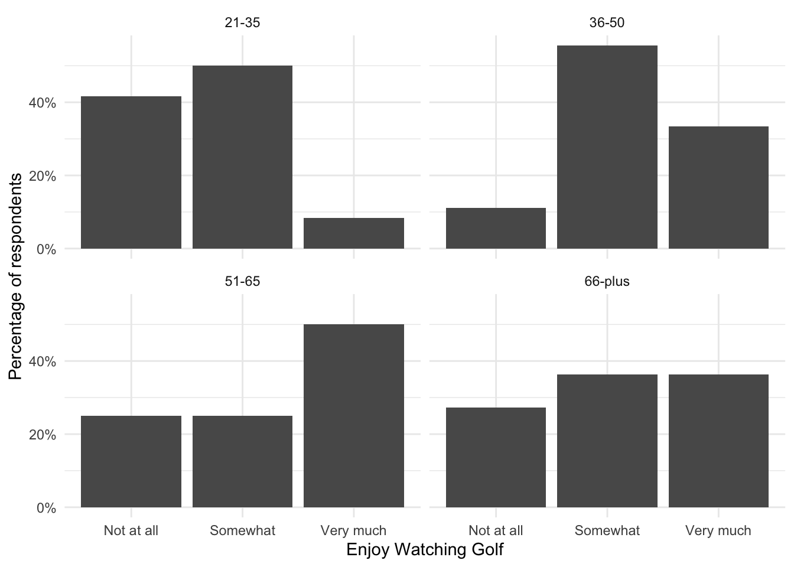

I hypothesize that the older someone is, the more they like watching golf. I conduct a survey based on an SRS of adults in America. The independent variable is a four-category measure of age: 21-35, 36-50, 51-65, 66-plus. The dependent variable is a three-category measure of how much they enjoy watching golf: not at all, somewhat, very much.
Part A
Points: 4
Note
2/4, your cross-tab is the wrong way around.
Make a cross-tab, by hand, of the relationship between these two variables based on the following (completely made up) data. Make sure that you present both raw counts and the appropriate percentages to examine the relationship.
age_golf_df <- tibble::tibble(age =c("21-35", "51-65", "66-plus", "21-35", "36-50", "21-35", "36-50","66-plus", "36-50", "51-65", "51-65", "21-35", "36-50", "21-35","66-plus", "51-65", "36-50", "66-plus", "51-65", "21-35", "66-plus","21-35", "36-50", "66-plus", "21-35", "36-50", "21-35", "66-plus","51-65", "51-65", "66-plus", "21-35", "66-plus", "21-35", "51-65","66-plus", "21-35", "36-50", "36-50", "66-plus"),preference =c("Somewhat", "Not at all", "Very much", "Not at all", "Somewhat","Not at all", "Not at all", "Somewhat", "Very much", "Very much","Somewhat", "Not at all", "Somewhat", "Very much", "Not at all","Not at all", "Somewhat", "Somewhat", "Very much", "Somewhat","Very much", "Somewhat", "Very much", "Somewhat", "Not at all","Very much", "Somewhat", "Somewhat", "Somewhat", "Very much","Not at all", "Not at all", "Very much", "Somewhat", "Very much","Very much", "Somewhat", "Somewhat", "Somewhat", "Not at all"))age_golf_df
# A tibble: 40 × 2
age preference
<chr> <chr>
1 21-35 Somewhat
2 51-65 Not at all
3 66-plus Very much
4 21-35 Not at all
5 36-50 Somewhat
6 21-35 Not at all
7 36-50 Not at all
8 66-plus Somewhat
9 36-50 Very much
10 51-65 Very much
# ℹ 30 more rows
datasummary_crosstab(preference ~ age, data = age_golf_df)
preference
21-35
36-50
51-65
66-plus
All
Not at all
N
5
1
2
3
11
% row
45.5
9.1
18.2
27.3
100.0
Somewhat
N
6
5
2
4
17
% row
35.3
29.4
11.8
23.5
100.0
Very much
N
1
3
4
4
12
% row
8.3
25.0
33.3
33.3
100.0
All
N
12
9
8
11
40
% row
30.0
22.5
20.0
27.5
100.0
age_golf_df |>count(age, preference) |>group_by(age) |>mutate(prop = n /sum(n)) |>ggplot(aes(x = preference, y = prop)) +geom_col() +facet_wrap(~ age) +labs(x ="Enjoy Watching Golf",y ="Percentage of respondents") +theme_minimal() +scale_y_continuous(labels = scales::label_percent())

Part B
Points: 2
Note
2/2, error carried forward
Do the data support my hypothesis? Be sure to explain the nature of the relationship (or lack thereof, if relevant).
The data does support your hypothesis. A greater proportion of those age 21-35 do not enjoy watching golf. Specifically, 45.5% of those who responded “not at all” to the question of if they liked to watch golf were between the ages of 21 and 35. Similarly, only 8.3% of those between the ages of 21 and 35 answered “very much” to the question of how much they like to watch golf. Conversely, out of those who responded they “very much” enjoy watching golf, 33.3% were 66+ and 33.3% were between 55 and 56.
However, the relationship is not perfectly correlated as a greater proportion of those between the ages 21 and 35 and 36 and 50 respectively answered that they “somewhat” enjoy watching golf than those between the ages 51 and 65 and 66+ respectively. Specifically, 35.3% of those between the ages 21 and 35 and 29.4% of those between the ages 36 and 50 answered that they “somewhat” enjoy watching golf compared to those between the ages of 11.8% of those between 51 and 65 and 23.5% of those 66+ respectively. Furthermore, more the proportion of respondents between the ages of 51 and 65 as well as 66+ who answered “not at all” was greater than the proportion of respondents between the ages of 36 and 50 who answered “not at all”.
But, overall, when looking at the categories “not at all” and “very much”, the the results suggest older respondents enjoyed watching golf more than younger respondents, suggesting support for the hypothesis.
Part C
Points: 2
Note
2/2
Compute (by hand) the chi-square statistic to test the null hypothesis of no relationship between these two variables. Be sure to show your work.
obs_values <-count(age_golf_df, preference, age, name ="obs_n")age_totals <-count(age_golf_df, age, name ="age_total")preference_totals <-count(age_golf_df, preference, name ="preference_total")obs_exp_counts <- preference_totals |>expand_grid(age_totals) |>relocate(age) |>mutate(exp_n = (preference_total * age_total) /nrow(age_golf_df)) |>left_join(obs_values, by =c("age", "preference"))obs_exp_counts
# A tibble: 12 × 6
age preference preference_total age_total exp_n obs_n
<chr> <chr> <int> <int> <dbl> <int>
1 21-35 Not at all 11 12 3.3 5
2 36-50 Not at all 11 9 2.48 1
3 51-65 Not at all 11 8 2.2 2
4 66-plus Not at all 11 11 3.02 3
5 21-35 Somewhat 17 12 5.1 6
6 36-50 Somewhat 17 9 3.82 5
7 51-65 Somewhat 17 8 3.4 2
8 66-plus Somewhat 17 11 4.68 4
9 21-35 Very much 12 12 3.6 1
10 36-50 Very much 12 9 2.7 3
11 51-65 Very much 12 8 2.4 4
12 66-plus Very much 12 11 3.3 4
ggplot(obs_exp_counts, aes(y = age, colour = preference)) +geom_segment(aes(x = exp_n, xend = obs_n, yend = age)) +geom_point(aes(x = exp_n), shape =1) +geom_point(aes(x = obs_n)) +scale_color_manual(values=met.brewer("Johnson", direction =-1)) +labs(x ="Number of respondents",y =NULL,colour ="How Much Do You Enjoy Watching Golf?",caption ="Hollow points represent the expected values, solid points represent the observed values.") +theme_minimal()
Warning in chisq.test(age_golf_df$preference, age_golf_df$age): Chi-squared
approximation may be incorrect
Pearson's Chi-squared test
data: age_golf_df$preference and age_golf_df$age
X-squared = 6.0932, df = 6, p-value = 0.4128
Part D
Points: 2
Note
2/2
Using the chi-square statistic that you computed in question 1(c), can you reject the null hypothesis of no relationship between these two variables with 95% confidence? Why, or why not?
Using the chi-square statistic I computed in question 1(c), I cannot reject the null hypothesis of no relationship between these variables with 95% confidence because the chi-square of 6.093151 is associated with a p-value of 0.4128367. This means that there is a 41.28% chance of observing the results found in the sample in the population if the null hypothesis were true.
Furthermore, to reject the null hypothesis of no relationship between these two variables with 95% confidence there must be a p-value of 0.05 or 5% or smaller in the case of a one-tailed test.
Question 2
Points: 10
Note
7/10
Note
Your chi-squared statistic is not correct.
I hypothesize that people with higher levels of education tend to be more likely to pay higher levels of attention to politics. Use the nes dataset from the poliscidols package to test my hypothesis. Create a cross-tab examining the relationship between individuals’ levels of education (education) and the time they spend paying attention to politics (attention_to_politics).
Do the data support my hypothesis? Be sure to explain the nature of the relationship (or lack thereof, if relevant). Report a chi-square statistic. What does the chi-square statistic tell you about whether you can reject the null hypothesis of no relationship between these two variables with 95% confidence? Why, or why not?
Creating the Crosstab
filtered_nes <- nes |>filter(!education %in%c("Refused", "Don't know"), !attention_to_politics %in%c("Refused")) |>drop_na()
The relationship between education level and attention paid to politics suggests that higher levels of educational attainment, on average, tend to be associated with greater amounts of attention paid to politics. Specifically, a greater proportion of those with a graduate degree and those with bachelor’s degrees responded that they paid attention to politics “always” than those with less than a high school credential, a high school credential, and some post-high school but no bachelors. Specifically, out of those with graduate degrees, 32.2% always pay attention to politics compared to 18.4% with less than a high school credential.
Additionally, a greater proportion of those with less than a high school credential responded that they never pay attention to politics. Specifically, 3.5% with less than a high school credential responded that they never pay attention to politics compared to .3% of those with a graduate degree. Thus, the data supports your hypothesis that people with higher levels of education tend to be more likely to pay higher levels of attention to politics.
The chi-squared statistic is 452.2418416 and the associated p-value is < 3.876865e-86.
Because the chi-square statistic is associated with a p-value less than 0.05, the chi-square tells me that I can reject the null hypothesis of no relationship between these two variables with 95% confidence. Specifically, a p-value equal to or less than 0.05 or 5% for a one-tailed test is necessary in order to reject the null hypothesis of no relationship between these two variables with 95% confidence.
Furthermore, this means that there is an extremely low possibility that one would have pulled such a sample that displays a relationship between education level and attention paid to politics if the null hypothesis were true.